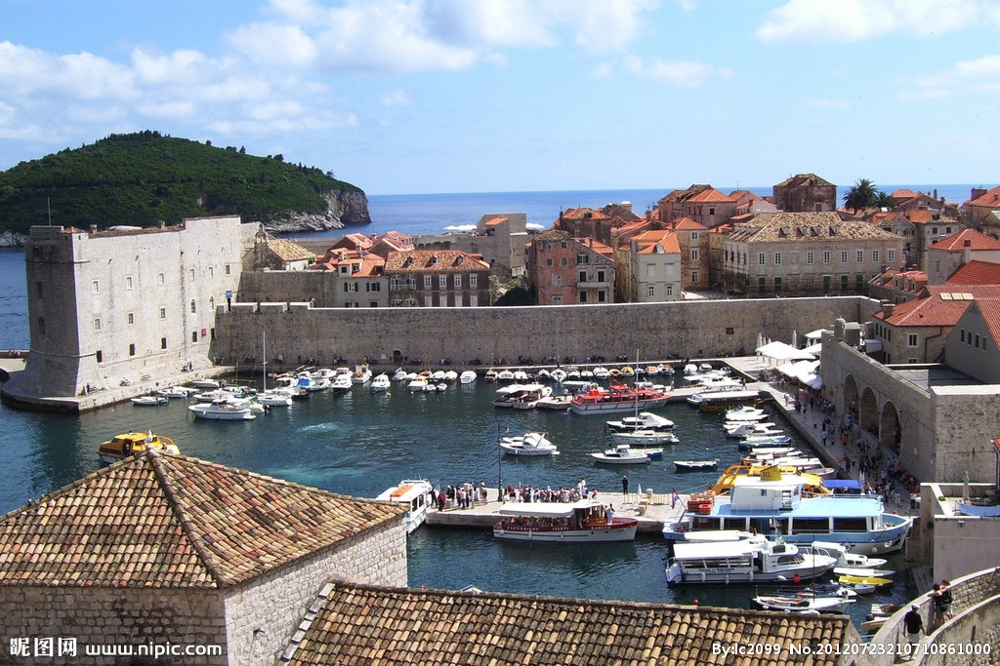
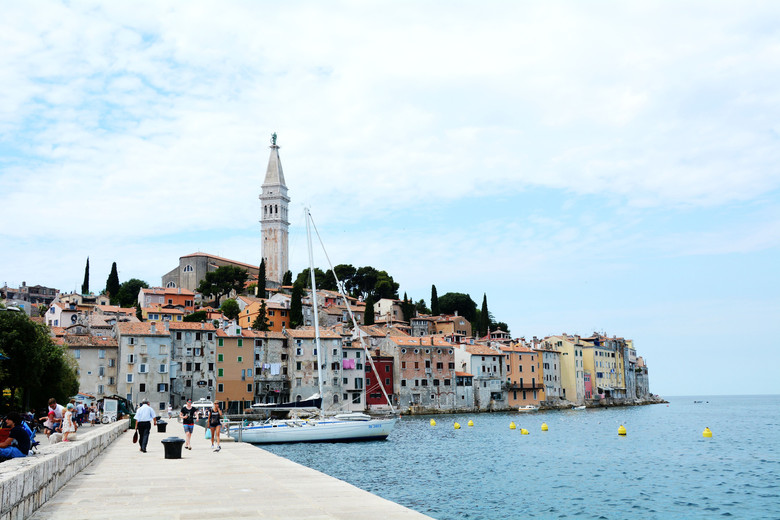
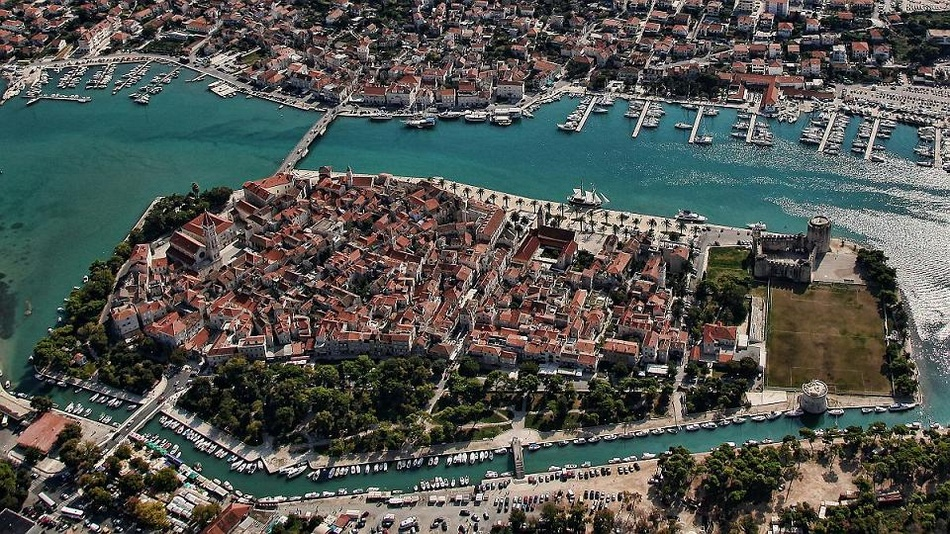
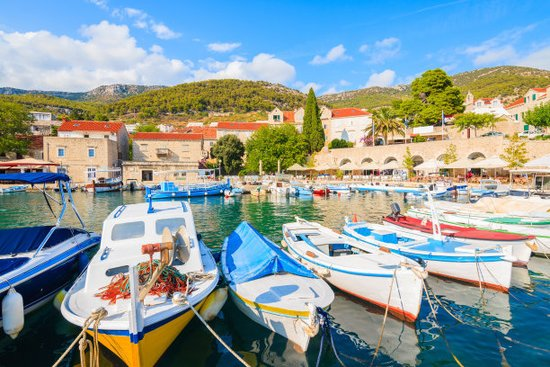
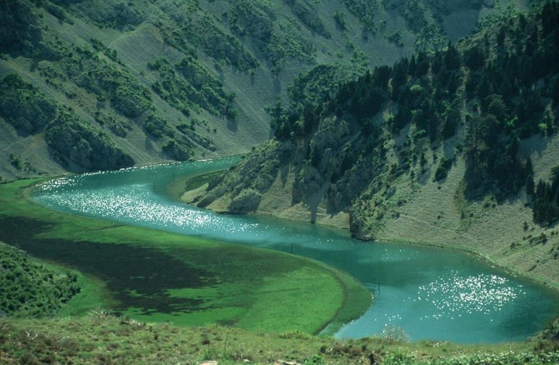
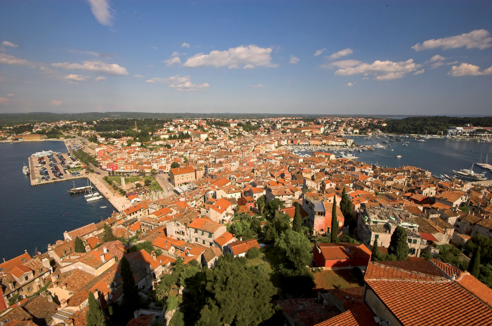
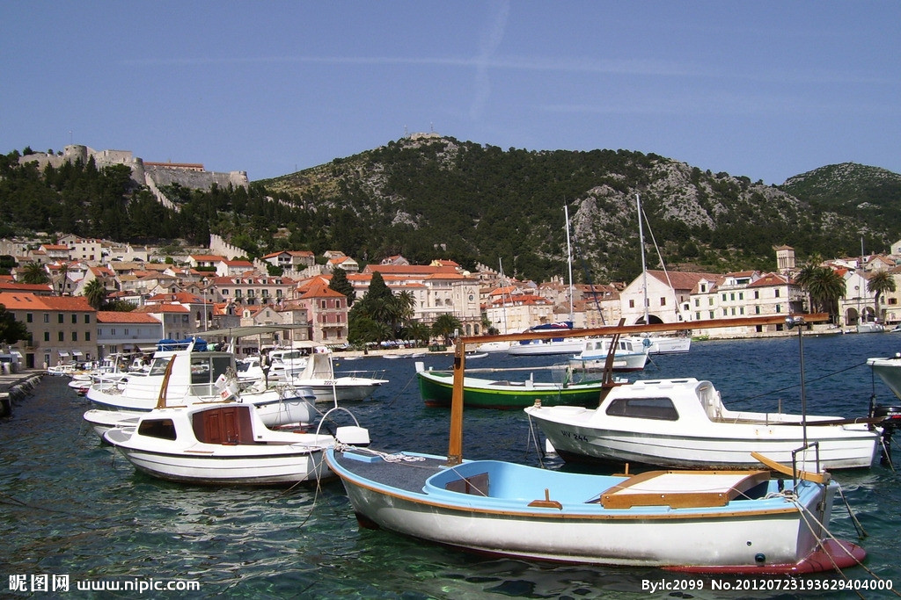
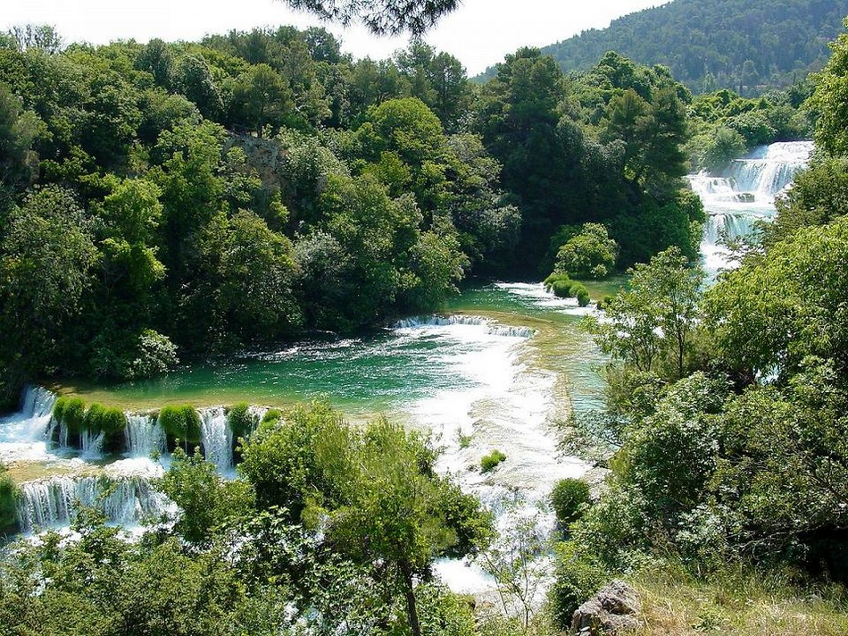

morly旅游网
一说克罗地亚，你肯定想到了今年世界杯，帅气的冠军队伍，想过去美丽的克罗地亚吗？
8世纪末到9世纪初，克罗地亚人建立早期封建国家，10世纪建立了强盛的克罗地亚王国 ，1918年12月，克罗地亚与其他南斯拉夫人联合成立了塞尔维亚-克罗地亚-斯洛文尼亚王国（1929年改称南斯拉夫王国），
1945年成为南斯拉夫联邦人民共和国的一个加盟共和国，1991年6月宣布脱离南斯拉夫社会主义联邦共和国独立，并于2009年加入北约，2013年7月1日加入欧盟。
克罗地亚是一个发达的资本主义国家。经济以第三产业为主，第二产业为副，旅游业是国家经济的重要组成部分，克罗地亚经济基础良好，旅游、建筑、造船和制药等产业发展水平较高。
萨格勒布
萨格勒布（Zagreb）是克罗地亚的首都。位于克罗地亚的西北部，坐落在萨瓦河西岸，梅德韦德尼察山脚下。面积284平方公里。
 奥西耶克
位于东部的平原地区，克罗地亚的粮仓瓦拉日丁，位于北部，宿有巴洛克之城的美誉。
 里耶卡
位于西北，拥有克罗地亚的第一大港口，里耶卡港在罗马帝国时期，还曾一度是欧洲最大的港口。嚣的迪拜城，让您体验一个不一样的迪拜，切身感受阿拉伯文化的魅力，而多种不同类型的活动，让你从惊险刺激到休闲舒适，再到疯狂迷醉。
 杜布罗夫尼克
位于最南端，被称为亚得里亚海上的珍珠。在巴尔干地区被不同异族统治了上千年的同时，杜布罗夫尼克却一直作为独立的共和国存在，直至被拿破仑所占领。。
 克罗地亚位于中欧的东南边 缘，巴尔干半岛的西北，亚得里亚海东岸。隔亚得里亚海与意大利相望，北部的邻国是斯洛文尼亚和匈牙利，东面和南面则是塞尔维亚与波黑。
沿海为地中海式气候，内陆逐渐向温带大陆性气候过渡。特殊的地理使克罗地亚境内呈现两种不同的气候类型，沿海地区为地中海式气候，内陆地区则是四季分明的大陆性气候。
内容整理至网络，如有侵权，请联系我们！1255394075@qq.com